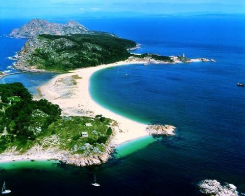

隔着大西洋眺望非洲大陆的西班牙加那利群岛在中国人心中是三毛远在欧洲的家，但爱好旅行的人知道真正让加那利名扬四海的其实是这里的天然火山、优质海滩和变化多样的自然环境。温柔的夜，轮渡起航，驶进黑暗的大海。
温柔的夜
大加那利（Grand Canary）岛上有一处终年绿树成荫的世外桃源。这里是一道山谷，谷底山溪四季长流，两侧山壁上有许多风化形成的岩洞，岛上最早的土著就曾在这些洞中生息。有了电线和网络的今天，山洞成了雅皮士和自然爱好者的天堂。冬暖夏凉的岩洞除了住家外，也有了酒吧和俱乐部。我们的车停在Barranco deGuayadeque 时，山谷里正蒸起一层雨雾。 用三毛的话说，大加那利是个很商业化的地方。因为舒服的气候，无数欧洲人在冬季来这里度假和购物，这里早已是一个国际化的旅游城市。三毛不喜欢游客们热爱的繁华，却又因为这里最接近她热爱的撒哈拉而定居在这里。她和荷西选了远离市区的一处住宅，就在离开这道山谷不远的一处山坡上。在这里，他们度过了幸福的几年。她的名篇《温柔的夜》和《哭泣的骆驼》就写作于这一时期。三毛和荷西的故居在一条随着山势盘旋而上的小街上。路两侧，每家都有一道砖墙，正好高过视线，护着主人的安静。除了透过铁栏门，路边行人看不见院子里的情形。